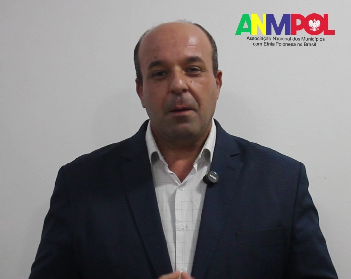

Convite Oficial – Assembleia Geral da ANMPOL
O Diretor-Geral da ANMPOL, Dalvi Doares de Freitas, reforça o convite para a Primeira Assembleia Geral da Associação Nacional dos Municípios com Etnia Polonesa no Brasil (ANMPOL), que será realizada no dia 22 de abril de 2026, em Porto Alegre (RS).
Este importante encontro marca o primeiro grande ato institucional nacional da entidade, reunindo representantes de municípios brasileiros com forte presença da cultura e da imigração polonesa.
Na ocasião, serão oficialmente apresentadas as prefeituras, câmaras municipais e entidades já integrantes da associação, consolidando a estrutura inicial da ANMPOL. Também ocorrerá a criação de novos cargos de representação nacional, com eleição e posse durante o evento.
Outro destaque da programação será o anúncio da primeira Missão Institucional da ANMPOL à República da Polônia, iniciativa que visa fortalecer a cooperação cultural, educacional e econômica entre os municípios brasileiros e instituições polonesas.
O evento contará ainda com a presença de três deputados federais da Polônia, além de representantes de instituições públicas e privadas ligadas à comunidade polonesa e às relações bilaterais entre Brasil e Polônia.
A Assembleia representa um marco histórico na articulação nacional dos municípios com herança polonesa, promovendo o fortalecimento institucional, o intercâmbio internacional e a valorização da identidade cultural dessas comunidades.
Sua presença é fundamental para esse momento histórico.
Informações e contato para imprensa
Instagram: @anmpol
E-mail: contato.anmpol@gmail.com
WhatsApp: (51) 99692-9066